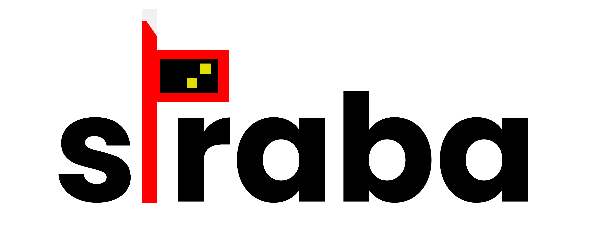

Füge hier die Haltestelle hinzu, die auf deinem Straba erscheinen soll.
Station:
Station hinzufügen
Stationen, die hinzugefügt werden:
⚙ Erweiterte Einstellungen
Für Hilfe wirf einen Blick auf das Einrichtungsblatt.
Zeilen:
1
2
3
Linienfilter:
Einstellungen abschließen
